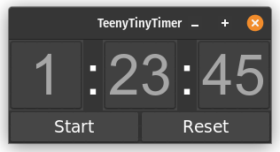
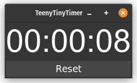
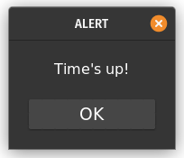

TeenyTimer - Cross-Platform Countdown Timer
This is a simple countdown timer built using Python and Tkinter. It allows you to set a target time and counts down to zero, providing an alert when the time is up. Executable files for both Linux and Windows are included in the Release. For Linux users, a desktop entry and installation script are provided to make setup easy. While this was a simple project, I learned how to make cross-platform GUI applications which are packaged for easy distribution, as well as familiarizing myself with the tkinter library.


